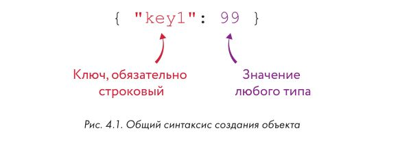
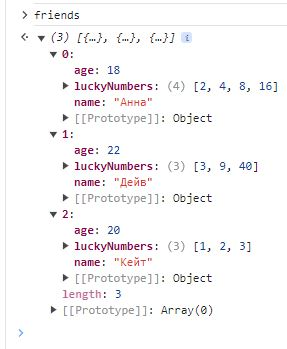
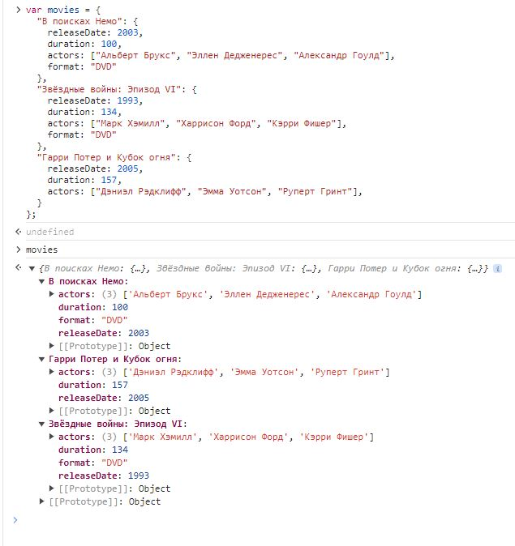
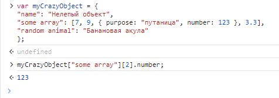

Объекты в js
Структура
Объекты JavaScript очень похожи на массивы, но для доступа к элементам объектов используются строки, а не числа. Эти строки называют ключами, или свойствами, а элементы, которые им соответствуют, значениями. Вместе эти фрагменты информации образуют пары «ключ-значение». Причем если массивы используются главным образом как списки, хранящие множество элементов, то объекты часто применяют как одиночные сущности с множеством характеристик, или атрибутов.
var dog = {
"legs": 4,
"name": "Шарик",
"color": "Чёрный"
};
Мы создали переменную под названием dog и присвоили ей объект с тремя парами «ключ-значение» (лапы, имя, окрас).
При создании объекта используются фигурные скобки {} вместо квадратных, к которым мы привыкли, создавая массивы.
Внутри фигурных скобок можно вводить пары «ключ-значение», а вместе скобки и пары значений называются литералом объекта.
Литерал объекта — это быстрый способ создания объекта вместе с его содержимым.

Мы уже встречались с литералами массивов (например, ["a", "б","в"]), числовыми литералами (например, 37), строковыми литералами (например, "лось") и булевыми литералами (true и false). Литерал — это когда значение записывается сразу и целиком, а не составляется постепенно, шаг за шагом.
Ключи без кавычек
Создавая первый объект, мы писали имена ключей в кавычках, однако это не обязательно. Следующая запись тоже является допустимым литералом объекта:
var dog = {
legs: 4,
name: "Шарик",
color: "Чёрный"
};
Если в имени ключа нужны пробелы, тогда кавычки обязательны.
Доступ к значениям внутри объектов
Хранящиеся в объектах значения можно получить с помощью квадратных скобок — так же, как элементы массива. Единственное различие в том, что вместо индекса (число) используется ключ (строка).
dog["name"];
'Шарик'
Точно так же, как необязательны кавычки при записи литерала объекта, их можно опускать и при доступе к значениям по ключу. Однако в этом случае код будет немного другим:
dog.name;
'Шарик'
Такую запись называют точечной нотацией. Вместо того чтобы писать имя ключа в кавычках внутри квадратных скобок, мы просто ставим точку, после которой пишем имя ключа, без кавычек. И, аналогично ключам без кавычек при записи литерала, такой прием сработает, только если ключ не содержит специальных символов — например, пробелов.
Как узнать ключи объекта?
Для этого в JavaScript есть удобное средство - команда Object.keys();
var dog = { name: "Шарик", age: 6, color: "Чёрный", bark: "Гав-гав!" };
var cat = { name: "Алиса", age: 5, color: "Белый" };
Object.keys(dog);
['name', 'age', 'color', 'bark']
Object.keys(cat);
['name', 'age', 'color']
Добавление элементов объекта
Пустой объект похож на пустой массив, только вместо квадратных скобок при его создании используются фигурные. Добавлять элементы объекта можно так же, как элементы массива, — но используя строки вместо чисел:
var dog = {};
dog["legs"] = 4;
dog["name"] = "Шарик";
dog["color"] = "Чёрный";
dog;
{legs: 4, name: 'Шарик', color: 'Чёрный'}
JavaScript хранит ключи объектов, не упорядочивая их. В массивах элементы расположены строго один за другим. Объекты хранят свои ключи без конкретной очередности, в результате чего разные браузеры показывают ключи в разном порядке. Так что никогда не полагайтесь в своих программах на тот или иной порядок ключей.
Добавление ключей через точку
Новые ключи также можно добавлять через точечную нотацию.
var dog = {};
dog.legs = 4;
dog.name = "Шарик";
dog.color = "Чёрный";
dog;
{legs: 4, name: 'Шарик', color: 'Чёрный'}
Массивы объектов
Так может выглядеть массив с объектами, описывающими динозавров:
var dinosaurs = [
{ name: "Тираннозавр рекс", period: "Верхнемеловой" },
{ name: "Стегозавр", period: "Верхнеюрский" },
{ name: "Платеозавр", period: "Триасовый" }
];
Получить сведения о первом динозавре можно уже известным нам способом — указав индекс в квадратных скобках:
dinosaurs[0];
{name: 'Тираннозавр рекс', period: 'Верхнемеловой'}
А если нужно только название первого динозавра, достаточно указать ключ объекта в еще одних квадратных скобках, следом за индексом:
dinosaurs[0]["name"];
'Тираннозавр рекс'
Другой вариант — воспользоваться точечной нотацией:
dinosaurs[1].period;
'Верхнеюрский'
Точечную нотацию можно использовать только с объектами, для массивов она не подходит.
Массив друзей
Создаём массив объектов со сведениями о друзьях, где в каждый из объектов вложено по еще одному массиву. Сначала создадим объекты, а затем поместим их в массив.
var anna = { name: "Анна", age: 18, luckyNumbers: [2, 4, 8, 16] };
var dave = { name: "Дейв", age: 22, luckyNumbers: [3, 9, 40] };
var kate = { name: "Кейт", age: 20, luckyNumbers: [1, 2, 3] };
Теперь создадим массив друзей:
var friends = [anna, dave, kate];
Итак, в переменной friends находится массив с тремя элементами: anna, dave и kate (каждый из них является объектом). Мы можем получить любой из объектов по его индексу в массиве:
friends[1];
{name: 'Дейв', age: 22, luckyNumbers: Array(3)}
Здесь мы извлекли из массива второй объект, dave (по индексу 1). Вместо массива luckyNumbers Chrome напечатал Array[3], что означает «это массив с тремя элементами»
Также мы можем получить значение, хранящееся в объекте, указав индекс объекта в квадратных скобках, поставив точку и написав соответствующий ключ:
friends[2].name;
'Кейт'
Можно даже получить значение из массива, находящегося в объекте, который, в свою очередь, находится в массиве friends:
friends[0].luckyNumbers[1];
4
Исследование объектов в консоли
Chrome позволяет изучать содержимое объектов, показанных в консоли.
Пример хранения информации о фильмах
Для этого можно создать объект, каждый ключ в котором — это название фильма, а каждое значение — другой объект, в котором содержится информация об этом фильме. Хранящиеся в объекте значения тоже могут быть объектами!
var movies = {
"В поисках Немо": {
releaseDate: 2003,
duration: 100,
actors: ["Альберт Брукс", "Эллен Дедженерес", "Александр Гоулд"],
format: "DVD"
},
"Звёздные войны: Эпизод VI": {
releaseDate: 1993,
duration: 134,
actors: ["Марк Хэмилл", "Харрисон Форд", "Кэрри Фишер"],
format: "DVD"
},
"Гарри Потер и Кубок огня": {
releaseDate: 2005,
duration: 157,
actors: ["Дэниэл Рэдклифф", "Эмма Уотсон", "Руперт Гринт"],
}
};

Наверное, вы заметили, что названия фильмов (ключи внешнего объекта) в кавычках, но ключи внутренних
объектов записаны без кавычек. Дело в том, что в названиях нужны пробелы — иначе пришлось бы писать нечто вроде
ЗвездныеВойныЭпизодVIВозвращениеДжедая. Для ключей вложенных объектов кавычки необязательны,
поэтому их нет. Код выглядит аккуратнее, когда в нем нет излишних знаков пунктуации.
Теперь, если вы захотите что-то узнать о фильме, это легко сделать:
var findingNemo = movies ["В поисках Немо"];
findingNemo.duration;
100
findingNemo.format;
'DVD'
Мы сохранили сведения о фильме «В поисках Немо» в переменной findingNemo. Теперь достаточно обратиться к
свойствам этого объекта (таким как duration и format), чтобы получить интересующую нас информацию.
Кроме того, в коллекцию легко добавить новые фильмы:
var cars = {
releaseDate: 2006,
duration: 117,
actors: ["Оуэн Уилсон", "Бонни Хант", "Пол Ньюман"],
format: "Blu-ray"
};
movies["Тачки"] = cars;
Здесь мы создали новый объект со сведениями о мультфильме «Тачки» (Cars), а затем добавили его в объект movies
с ключом "Тачки". Для того, чтобы просмотреть название фильмов подойдет Object.keys();
Object.keys(movies);
['В поисках Немо', 'Звёздные войны: Эпизод VI', 'Гарри Потер и Кубок огня', 'Тачки']
Вывод
Теперь мы знаем, как устроены объекты JavaScript. Они во многом похожи на массивы и тоже нужны для хранения множества элементов данных в одном месте. Но есть важное отличие — для доступа к элементам объекта используются строки, тогда как элементы массива расположены по числовым индексам. Поэтому массивы отсортированы по порядку, а объекты нет.
Задания
Вглубь объектов и массивов
var myCrazyObject = {
"name": "Нелепый объект",
"some array": [7, 9, { purpose: "путаница", number: 123 }, 3.3],
"random animal": "Банановая акула"
};
Как одной строкой JavaScript-кода извлечь из этого объекта число 123?
